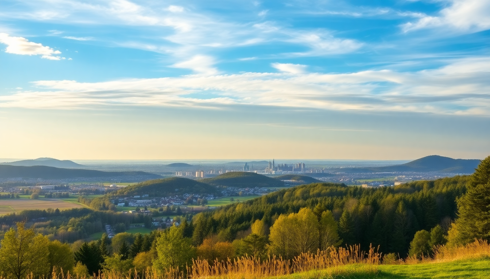

Best Day Trips from Berlin: Potsdam, Dresden & Spreewald

I spent a month based in Berlin’s Kreuzberg neighborhood, and while the city itself never gets boring, I needed a change of pace. The three day trips I actually took—Potsdam, Dresden, and Spreewald—each felt like a completely different country. Here’s what worked, what didn’t, and exactly how to pull them off without wasting time.
Is Potsdam worth a half-day or full-day trip?
Potsdam is a half-day trip, but only if you pick one palace. I tried to do both Sanssouci Park and the Dutch Quarter in one afternoon, and I ended up rushing through the best parts. The S-Bahn from Berlin Hauptbahnhof to Potsdam Hauptbahnhof takes about 30 minutes on the S7 line—smooth and cheap.
The real draw is Sanssouci Palace, Frederick the Great’s rococo summer villa. I paid €14 for the combined ticket that included the palace interior and the Picture Gallery. The vineyard terraces outside are free and offer a decent view over the park. Inside, the rooms are small but ornate—the Marble Hall and the Voltaire Room stood out.
- Sanssouci Palace — book a time slot online; the walk-up line can hit 40 minutes on weekends.
- Dutch Quarter — 134 red-brick houses from the 18th century. Good for coffee at Café Guam and a stroll, but not a must-see if you’re short on time.
- Cecilienhof Palace — where the Potsdam Conference happened in 1945. I skipped it, but a friend said the courtyard is more impressive than the interior.
If you only have a half-day, do Sanssouci and the park. If you have a full day, add the Dutch Quarter for lunch and a slow walk. Avoid the tourist-trap restaurants directly outside the palace gates—overpriced currywurst for €9.
How do you get to Dresden in one day from Berlin?
Dresden is a long day trip—about two hours each way on the ICE train from Berlin Hauptbahnhof. I left at 7:15 AM and was back by 9 PM, which gave me a solid seven hours in the city. The train costs around €30-€50 one-way if you book early on the DB Navigator app. Don’t buy a flexible ticket; the fixed-time Sparpreis is half the price.
The old town (Altstadt) is compact. I walked from the Neustadt station across the Augustus Bridge and hit all the key spots on foot. The Frauenkirche is the centerpiece—rebuilt after WWII, the dome is free to enter, and the views from the top cost €8. I paid and regretted it; the stairs are narrow and the view is just the same rooftops you see from the bridge.
- Zwinger Palace — the courtyard is free and stunning. The Old Masters Picture Gallery inside costs €14, but the Raphael “Sistine Madonna” is there if you’re into art.
- Brühl’s Terrace — a riverside promenade nicknamed “the Balcony of Europe.” Free, great for a picnic. I grabbed a pretzel from Bäckerei Rentsch on the way.
- Kunsthofpassage in Neustadt — a courtyard with colorful, quirky building facades. Skip if you’re tight on time; it’s more of a photo spot than an experience.
For lunch, I ate at Sophienkeller in the Gewölbe (vaulted cellar) near the Frauenkirche. The Saxon potato soup with sausage was €12 and filling, but the service was slow. Better option: Augustus am Zwinger for a quicker schnitzel.
One warning: Dresden’s old town is almost entirely rebuilt post-war. It looks authentic, but it’s not original. If you’re expecting medieval grit, you’ll be disappointed. I found it beautiful but slightly sterile.
Can you do Spreewald as a spontaneous day trip?
Yes, but only if you plan the boat ride ahead. Spreewald is a biosphere reserve about 90 minutes southeast of Berlin by regional train (RE2 from Berlin Hauptbahnhof to Lübbenau, then a 10-minute walk to the canal). No ICE needed—just a €11 Brandenburg-Berlin ticket for regional trains, which covers up to five people.
The main activity is punting through the canals on a flat-bottomed boat called a Kahn. I booked a 2-hour guided tour with Kahnfahrten Neumann for €15 per person. The guide spoke German only, but the scenery—alder trees, small wooden bridges, thatched cottages—doesn’t need translation. Bring bug spray; mosquitoes were relentless in June.
- Lübbenau — the main launch point. The tourist info center on Kirchplatz hands out maps of walking and cycling routes.
- Lehde — a tiny village within the reserve. I rented a bike from Fahrradverleih Lehde for €10 for four hours and cycled the 15-kilometer loop past cranberry bogs and stork nests.
- Spreewaldtherme — a thermal bath in Burg. I skipped it, but locals told me it’s good for a rainy afternoon.
Food tip: Stop at Gurkenhütte in Lübbenau for pickles (Spreewald gherkins are famous). A jar of spicy ones cost me €3.50. Don’t bother with the restaurant boats—overpriced and the food sits out too long.
Spreewald is best from May to September. In winter, the canals freeze and the boats stop running. I went in late May and the crowds were manageable, but July and August are packed with families.
What is the best way to combine these trips?
You can’t do all three in one day—that’s a mistake I almost made. Potsdam needs half a day, Dresden needs a full day, and Spreewald needs at least six hours including travel. I spread them across three separate days with rest days in between.
For Potsdam, take the S-Bahn. For Dresden, book ICE tickets at least a week ahead for the best price. For Spreewald, use the regional train and buy the Brandenburg-Berlin ticket at the station machine—no app needed.
If you only have one free day, pick Dresden if you want architecture and museums, or Spreewald if you want nature and quiet. Potsdam is the middle ground: less travel time, but less variety.
FAQ
Is it worth visiting Sanssouci Palace in winter? The palace interior is open year-round, but the vineyard terraces and gardens are bare from November to March. I went in February and the park was still pleasant for a walk, but the fountains were drained and the café in the New Chambers was closed. If you go in winter, focus on the palace tour and save the gardens for spring.
Can you visit Dresden and Meissen in the same day? Technically yes, but I wouldn’t. Meissen is 30 minutes northwest of Dresden by S-Bahn, and the porcelain factory tour is interesting. But adding Meissen means you’ll spend less than three hours in Dresden’s old town, which felt rushed when I tried it. Pick one.
Are the Spreewald canals navigable without a guide? You can rent a kayak or a small electric boat from Bootsverleih Scholz in Lübbenau and go solo. I tried this—the canals are well-marked with signs, but I got turned around twice. A guided Kahn tour is easier and the guides tell local stories you won’t get from a map.
Conclusion
- Potsdam is best as a half-day trip from Berlin—stick to Sanssouci Palace and the park, skip the Dutch Quarter if you’re short on time.
- Dresden requires a full day and a pre-booked ICE train ticket; the rebuilt old town is impressive but feels curated, not original.
- Spreewald offers a genuine nature escape—book a Kahn tour in advance, bring mosquito repellent, and eat the local pickles.
- Use the S-Bahn for Potsdam, regional trains for Spreewald, and ICE for Dresden—each has a different ticket type and booking window.
- Don’t try to combine trips on the same day; each deserves its own focus.